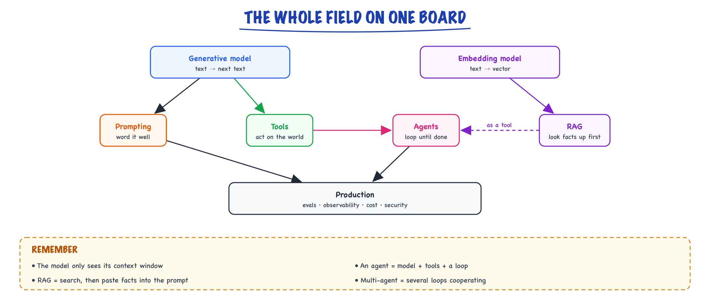

The big picture // Start here
Two engines, four add-ons, one loop: the mental model everything else hangs on.
01 — At a glance

Two engines and four add-ons. Everything else in AI engineering is plumbing around a generative model and an embedding model.
02 — The whole field in five minutes
Before any detail, here's the entire landscape so later topics have a place to hang.
03 — 1. An LLM is a next-word predictor
A Large Language Model is trained on enormous amounts of text to do one thing: given some text, predict the next chunk of text. Do that repeatedly and you get sentences, code, answers. It's autocomplete that read the whole internet. Everything "smart" it does is this one trick applied well.
04 — 2. It only knows what's in front of it
The model has no memory and no live internet. It sees only the text you send (the prompt) plus what it has written so far. That text-it-can-see is the context, and it's finite.
05 — 3. To make it useful, we bolt on four things
┌──────────────────────────────────────────────┐
PROMPTING │ word it well so the output is good │
RAG │ look facts up first, paste them into context │
TOOLS │ let it call functions to act on the world │
AGENTS │ wrap it in a loop so it can do multi-step work│
└──────────────────────────────────────────────┘
06 — 4. An "agent" is just a loop around the model
Give the model a goal and some tools, then run: the model picks an action → your code runs it → you feed the result back → repeat until done. That loop is the entire idea behind "AI agents." Multi-agent systems are just several of these loops cooperating.
Plain-English glossary (just these for now)
Token = a word-fragment, the unit models read. Prompt = the text you send. Context window = how much text it can consider at once. Tool = a function the model can ask you to run. Agent = model + goal + tools + a loop. We'll go deep on each.That's the skeleton. The rest of this guide is putting muscle on it — starting with what's actually happening inside the model.
07 — How to use this guide
This is a from-scratch guide. If you've never made an API call, start at the first stage and walk forward — every term is explained the first time it appears. If you're already building, jump to any stage from the map.
Who this is for
Total beginners (we start at "what is a token"), developers who can code but are new to LLMs, and engineers who need production-grade patterns. Three reading paths below.